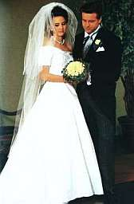

COMPANY INFORMATION

GENERAL ABOUT PAULA ELONEN KY
The special shop, that has a best assortment of formal wears and services in the area of South-east Finland Our main marketing area is Kymenlaakso, but a lot of customers from South-Karjala, Päijät-Häme and East Uusimaa too. Some customers also from all over the Finland.
Our well position in the heart of Kouvola. Excellent train connections from all directs and only 200 m from railway and bus-station to us. Only 120 kms. from Russian border.
MEN'S FORMAL WEARS
 Large own storage, including all formal wears with accessories and shoes. Sizescale 46-66 with B and C measuments and also some with D ones.
Large own storage, including all formal wears with accessories and shoes. Sizescale 46-66 with B and C measuments and also some with D ones.
The morning coat equipped with grey basic corsage have about 20 different gows. Last times we strongly have increased the coloured choice of corsage collection equipped the “priest” or “elephant” model gows.
In the addition we also have a mantles, scarfs, top hats, white gloves etc. All men’s formal suits with accessories even to rent and sale. All products the domestic quality ones.
OTHER SERVICES & BENEFITS

All prices of our formal wears are allways indluding the adaptations With completely dresses, basic wears, washing services and the advices & rules of dressing. Also backhand with phone.
For all (over 50 €) buyer or renter, bridal and men’s formal accessories with discount of -15 %.
If your shops paid over 500 euros and when you pay it immediately with cash or bank card, then the discount is –2 %. Naturally it is not depending on discounted dresses.
In the addition of cash or bankcard payment also with couple of way to pay your shops. Bridal gowns or formal wears of which has been byued from us for storaging without of payment.
{kind=link}